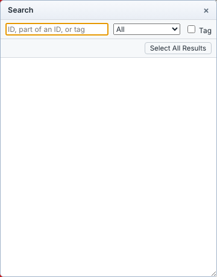
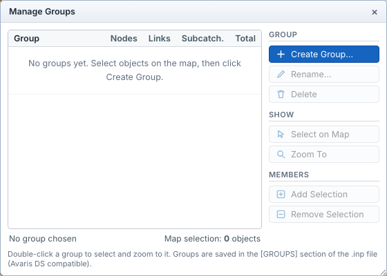
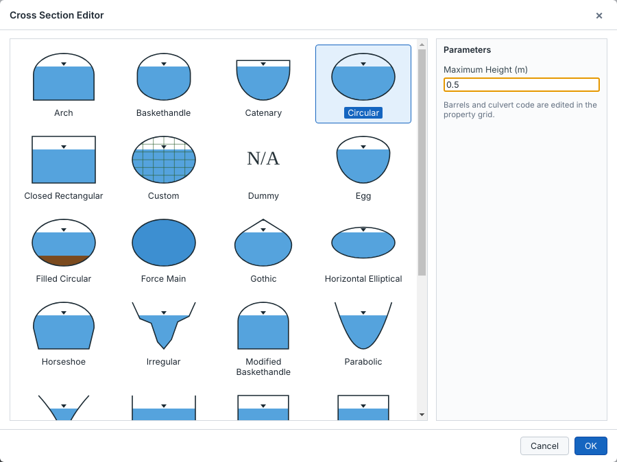
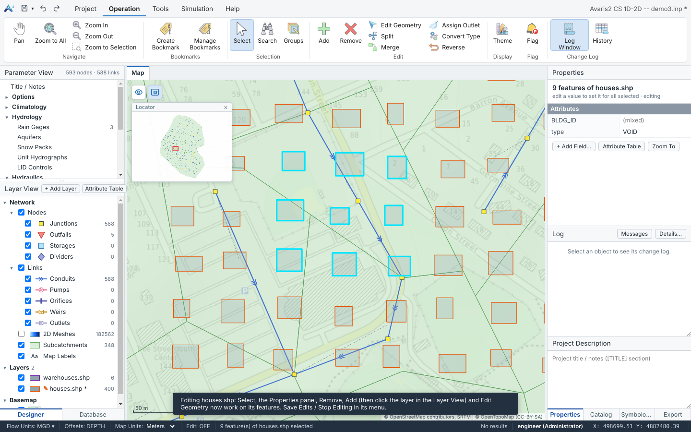
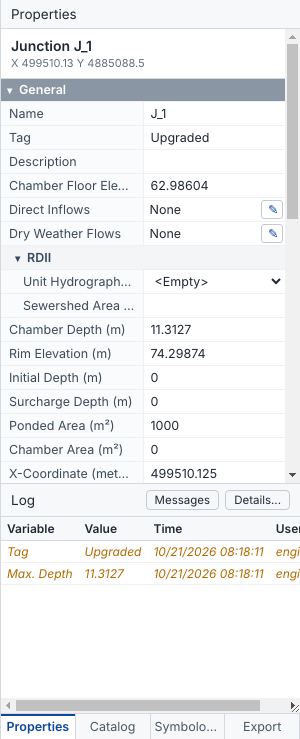
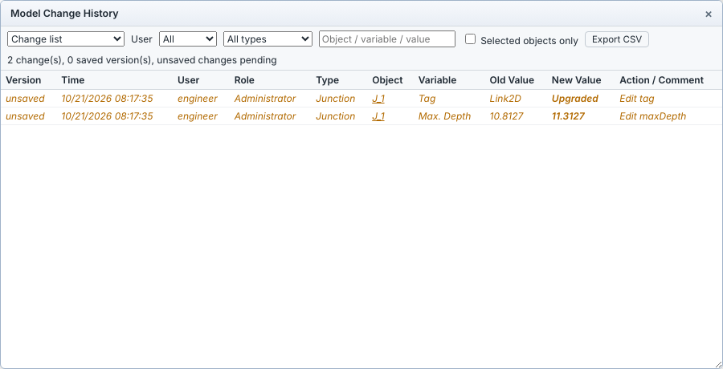
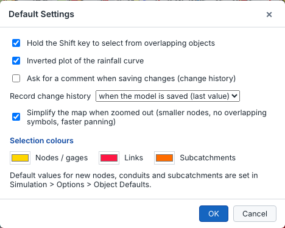

With the Select tool active, which is the default:
The status bar shows how many objects are selected, with their total area and length.
Operation ▸ Selection ▸ Search (Ctrl+F) finds objects by ID, part of an ID or tag, optionally for one object type. Click a result to zoom to it, or click Select All Results to select every match.

Groups are named sets of objects, for example Phase 1 upgrades or Pump station catchment A. They are stored in the [GROUPS] section of the .inp file, in the same format Avaris DS uses.

Create Bookmark saves the current map view under a name. Manage Bookmarks lists them with Go To, Rename and Delete.
New objects get the next free ID and the default values set in Simulation ▸ Options ▸ Object Defaults. Conduit length is taken from the map when Auto length from map is ticked.
To delete objects, select them and click Remove or press Del. Links connected to a deleted node are deleted too.
Ctrl+C copies the selected objects together with everything they use: inflows, RDII, groundwater, LID usage, curves, time series and patterns. Ctrl+V pastes them into the same model or into another model, even in another Avaris2 CS window. IDs that already exist are renamed with a suffix (_1, _2 …).
Turn on Operation ▸ Edit ▸ Edit Geometry; the status bar then shows Edit: ON. In this mode you can:
Turn the mode off to avoid moving objects by accident.
Use Split to:
Click Assign Outlet, click a subcatchment (Ctrl+click for several), then click the node it drains to. For many subcatchments at once, use Batch Assign Outlet.
Convert Type changes selected objects into another type, for example a junction into a storage unit or a conduit into a weir, For nodes, the invert elevation and depth are kept and the other properties get default values. For links, the cross section and offsets are kept where the new type uses them. Reverse swaps the start and end nodes of the selected links, together with their offsets.
Edit values in the Properties pane or in an attribute table.
x*1.1 to raise every value by 10 %.elev + maxDepth.For a conduit, click the pencil button next to Shape to open the Cross Section Editor. Pick the shape from the picture gallery, then enter its dimensions. The editor offers all the standard shapes, plus irregular (transect), custom (shape curve) and street sections.

The pencil buttons in the Properties pane open the editors for:
Every change, including bulk changes, can be undone with Ctrl+Z and redone with Ctrl+Y, or with the arrows in the quick-access toolbar.
The properties of every object type are explained field by field on these pages:
Imported vector layers – buildings, boundaries, cut-off lines, mesh zones and any other shapefile, GeoJSON, KML or geodatabase layer – can be edited directly in Avaris2 CS, as in Avaris DS. The usual tools (Select, Properties, Remove, Add, Edit Geometry) then work on the features of that layer instead of the network.

type for all of them at once. ✎ in the Layer View marks the layer being edited, * unsaved edits..dbf when no geometry changed, the geometry in the layer's own coordinate system. Geodatabase, GeoJSON and KML layers are saved as a new shapefile.| Task | How |
|---|---|
| Select features | Select, then click a feature or drag a box; Ctrl adds to the selection. Network nodes stay on top and can still be clicked. |
| Edit attributes | The Properties panel shows the attributes of the selected features. With several features selected, a value you type is set for all of them; (mixed) marks different values. + Add Field… adds an attribute. |
| Delete features | Remove or Del. |
| Draw new features | Add, then click the layer in the Layer View, and draw on the map (points: click; lines and polygons: click the vertices, double-click or Enter to finish; Esc stops drawing). |
| Change the shape | Edit Geometry: drag a vertex; double-click an edge to add a vertex; right-click a vertex to remove it. |
| Table editing | Attribute Table of the layer: edit cells; column menu ▸ Delete Field. |
For the 2D model, edit the exclusion layer to give single buildings their own type (VOID, RAISED, POROUS), height or porosity, then save and rebuild the mesh.
Avaris2 CS records every change to a model: who made it, when, which object and variable, the old value and the new value. The record is kept in Model.osemhist.json next to the model.
The Log below the Properties pane lists the changes of the selected object. Changes that are not saved yet are shown in italics. Click a property name in the Properties pane to show only the changes of that variable.

Operation ▸ Change Log ▸ History, or Full Change History… in the Log window (Operation ▸ Change Log ▸ Log Window), lists every change in the model. You can:
Click a row to select that object on the map.

In Project ▸ Settings ▸ Default you can choose:
